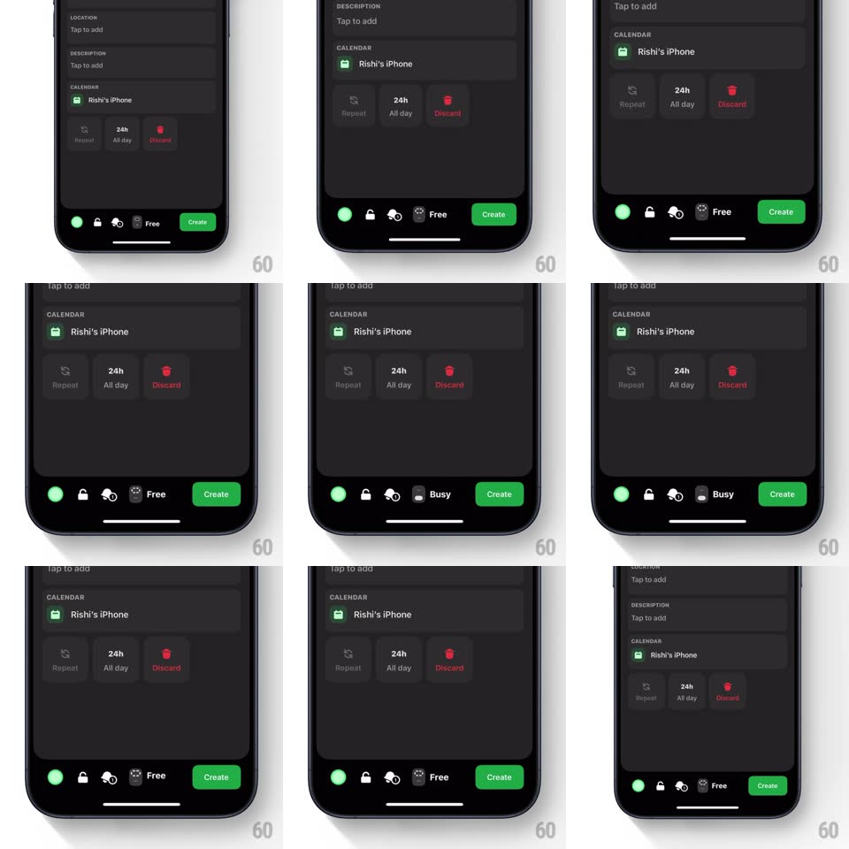

Media
Frame-by-frame

Rebuild this interaction 1:1: Amie's free/busy toggle - a pill in the event editor's bottom bar that morphs between "Free" and "Busy": the icon crossfades and the label swaps with a springy width change, the pill's accent color flipping with it.

Rebuild this interaction 1:1: Amie's free/busy toggle - a pill in the event editor's bottom bar that morphs between "Free" and "Busy": the icon crossfades and the label swaps with a springy width change, the pill's accent color flipping with it. ## Integration Integration: stack-agnostic spec - springs given as stiffness/damping, timed motions as duration + curve; map every value to your framework and animation library of choice. ## Scene Dark event editor: fields (Location, Description, Calendar "Rishi's iPhone", Repeat / 24h All day / Discard chips). Bottom bar: a status pill showing an icon + "Free" or "Busy" (green accent vs dark/red accent), beside a green "Create" button. ## Motion spec Pattern: morphing state pill. - Tap the pill: it squashes slightly (scale 0.94, 100ms) then its width springs to fit the new label (spring ~380/20 - the pill visibly resizes, "Free" shorter than "Busy"). - The icon crossfades with a tiny vertical slide (out-up, in-from-below, 200ms) - a person-check vs a slashed/away glyph. - The label letters swap with a masked slide (150ms), and the accent dot/icon tint cross-blends green <-> muted red (250ms). - A subtle haptic tick on each flip; the pill does a single settle wobble (scale 1.03 -> 1, spring ~480/18). - The rest of the bar is inert - only the pill performs. ## Calibration - Width animates, position is anchored to its bar slot - neighbors never shift. - Both states are equally weighted visually - neither reads as "default" or "warning". ## Reduced motion Icon and label crossfade; pill width snaps. ## Don't miss - The pill RESIZES - a fixed-width control with swapping text would lose the whole toy-like quality. - The state flip is instant and reversible with one tap - no confirmation for availability.